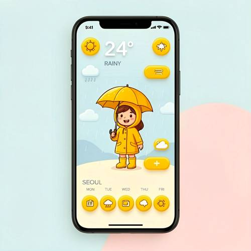
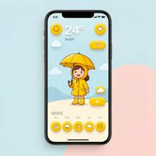
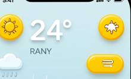
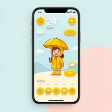
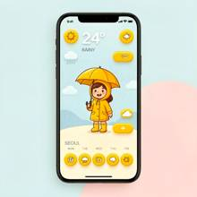
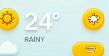

Grammar — Please design an interface for a weather app. There is a cartoon girl
Please design an interface for a weather app. There is a cartoon girl wearing a yellow raincoat. All icons and buttons in the interface also adopt a round yellow cartoon style consistent with the girl.


Judge — Direct
- FAILGrammar - Consistency — The prompt requires that all icons and buttons adopt a style consistent with the girl. The girl is drawn in a rounded, cartoon style. The icons and buttons in the interface also share this rounded, cartoon aesthetic, including similar line work and simplicity. However, the prompt specifies a 'round yellow cartoon style' for 'All icons and buttons'. While most icons are indeed round and yellow, there is one prominent circular icon above the girl on the right that is light blue, not yellow. Because not 'all' icons are yellow, this condition is not fully met.
- PASSCompound - Feature Matching — The image contains a cartoon girl wearing a yellow, hooded raincoat and blue boots, which matches the first part of the prompt. The image also displays an interface with multiple icons and a large button at the bottom. The majority of these icons are circular and yellow, and the button is a rounded rectangle and yellow. All these elements are drawn in a cartoon style. Therefore, the image successfully matches the described features.
Judge — Continuum
- PASSGrammar - Consistency — The image displays a weather app interface featuring a central cartoon girl. The various icons and buttons, including the sun icon, the plus button, and the row of daily weather icons at the bottom, are all rendered in a yellow, rounded, cartoon style. This style, characterized by soft shapes, a uniform yellow color, and simple outlines, is visually consistent with the style of the cartoon girl.
- PASSCompound - Feature Matching — The image shows a cartoon girl positioned in the center of a smartphone screen. She is wearing a yellow raincoat and matching yellow boots. The app interface also contains multiple icons and buttons. These interactive elements, such as the sun, cloud, and plus icons, are all designed in a round or rounded shape, are colored yellow, and are rendered in a cartoon style.
What the agent did
Thinking
We need answer by generating image. Need use flux2-klein always. Need generate interface weather app with cartoon girl yellow raincoat, all icons/buttons round yellow cartoon style. Need likely create polished UI mockup. We should call generate_image. Need maybe include text? Prompt asks design interface, could have weather text maybe "Sunny 24°" etc. Need inspect and edit if wrong. We need follow benchmark policy. No seeds. Size fixed by harness? generate_image default 1024. User didn't specify. We can generate 1024. Need maybe portrait mobile app interface. Let's craft detailed prompt: mobile weather app UI mockup, rounded card, cartoon girl in yellow raincoat, yellow circular icons/buttons, consistent style, clean vector illustration, pastel rainy background, temperature, conditions, forecast. Since model might render text poorly; we can include minimal text maybe "24°", "Sunny", "Today". Need verify with inspect_region if text. We can avoid complex words perhaps use numerals and simple labels. But weather app interface needs UI elements. Let's generate.
Step 1 — `generate_image`
{
"prompt": "A polished mobile weather app interface design, portrait smartphone screen mockup on a soft pastel background. The UI features a cheerful cartoon girl wearing a bright yellow hooded raincoat and yellow boots, standing under a small umbrella in gentle rain. All icons and buttons are rounded, chunky, glossy yellow cartoon style consistent with the girl's raincoat: circular sun icon, cloud icon, rain icon, wind icon, plus pill-shaped yellow buttons. Clean rounded cards, soft shadows, playful vector illustration, cohesive yellow-and-cream palette with sky-blue accents. Show a large temperature reading \"24\u00b0\", simple weather label \"RAINY\", location \"SEOUL\", and a weekly forecast row with five round yellow icons. Modern UI/UX, high quality app design, crisp edges, balanced composition, no real photo, no extra people, no cluttered text.",
"width": 1024,
"height": 1024,
"model": "flux2-klein"
}Result img_0

Thinking
We need inspect image. It looks generally good but has issues: weather label rendered "RANY" instead of "RAINY". Forecast labels gibberish: Yen, Vehy, Reue, 2all, Farr. Top right icon maybe odd white blob, yellow buttons. User asks design interface, likely text should be correct? Prompt included text. We need verify via zoom perhaps inspect_region around text. Need mark best? First image mostly good but text wrong. We should mark best early because willing? It has obvious misspelling, perhaps not willing yet? Policy says mark as soon as have image willing to submit. It is mostly good but text errors; maybe mark anyway to protect. But only one mark, can update. Let's inspect text areas with inspect_region. Need maybe use multi_tool parallel for multiple crops? Could inspect top label and forecast row. Use inspect_region with rectangles. The displayed image is 768? actual maybe 1024. Need coordinate based actual image. We can use normalized rectangles. Top label around [0.38,0.20,0.62,0.30]; forecast around [0.30,0.70,0.70,0.85]. Use parallel.
Step 2 — `inspect_region`
{
"image": "img_0",
"roi": [
0.35,
0.12,
0.68,
0.32
],
"normalized": true,
"padding": 0.05
}Result img_1

Step 3 — `inspect_region`
{
"image": "img_0",
"roi": [
0.28,
0.68,
0.72,
0.88
],
"normalized": true,
"padding": 0.05
}Result img_2
Thinking
Need edit text. Since edit_image targeted instruction. Fix "RANY" to "RAINY" and forecast labels to MON TUE WED THU FRI perhaps. Also maybe top-right icon is splat not weather; could fix to cloud. The girl is good. UI icons mostly yellow round. Need edit image with model flux2-klein per benchmark policy (fixed). Prompt: change only misspelled weather label RANY to RAINY; change five small forecast day labels under SEOUL to MON, TUE, WED, THU, FRI; keep everything else unchanged. Maybe edit_image handles text. Let's call edit_image on img_0. Also mark best? The current image not yet marked; maybe mark before edit? If edit goes wrong we can mark img_0 as best (though flawed). Policy says mark early. Do mark_best img_0 now with reason current strong composition but text errors. Then edit. Need call mark_best and edit maybe sequential because edit doesn't depend on mark. Could parallel? mark_best independent, edit depends on image but not on mark. We can do sequential maybe mark then edit. Let's mark.
Step 4 — `mark_best`
{
"image": "img_0",
"reason": "Strong overall weather-app composition with the yellow-raincoat girl and matching rounded yellow UI; keeping as fallback while fixing small text errors."
}Thinking
Now edit. Use image img_0 or best? best points to img_0. Prompt delta only. Mention preserve girl/icons/layout. Need concrete. "Replace the misspelled label 'RANY' under 24° with 'RAINY'. Replace the five small forecast day labels under SEOUL with 'MON', 'TUE', 'WED', 'THU', 'FRI'. Keep all artwork, colors, icons, buttons and layout unchanged." This is text edit; name incorrect and correct. Could have two changes in one prompt (multi-step says split multiple distinct changes). Text edits are both text; but instructions say for multiple changes split. Could do one edit for RANY then forecast. But maybe one text correction prompt can handle. Better split to avoid leakage. First fix RANY. Then forecast. Let's edit RANY only.
Step 5 — `edit_image`
{
"image": "best",
"prompt": "Replace only the misspelled weather label \"RANY\" under the large \"24\u00b0\" with the correctly spelled word \"RAINY\" in the same gray rounded sans-serif style. Keep the girl, umbrella, yellow icons, buttons, colors, and layout unchanged.",
"model": "flux2-klein"
}Result img_3

Thinking
RAINY fixed. Forecast labels still gibberish. Need edit forecast labels. Use img_3. Prompt delta: replace five small gray labels under SEOUL with MON TUE WED THU FRI, same small gray sans-serif. Keep icons etc. Let's do.
Step 6 — `edit_image`
{
"image": "img_3",
"prompt": "Replace only the five small gibberish day labels under \"SEOUL\" with the clean labels \"MON\", \"TUE\", \"WED\", \"THU\", \"FRI\", in the same small gray sans-serif style and positions. Keep the five yellow round forecast icons and everything else unchanged.",
"model": "flux2-klein"
}Result img_4

Thinking
Now looks good. Need inspect text zoom maybe forecast and top. It appears MON TUE WED THU FRI correct. Top right icon is a white splat on yellow circle, could be a star? User asked all icons/buttons round yellow cartoon style consistent. It is round yellow, but icon is weird. Could improve to a cloud or wind? But maybe acceptable? Need evaluate against intent. Interface design: cartoon girl yellow raincoat, all icons/buttons round yellow cartoon style. In img_4, top left sun button good; top right maybe yellow circle with white splash (not recognizable); right side buttons yellow pill with menu and plus; small cloud button. Forecast icons include clipboard/calendar, rain cloud, square/photo, cloud, sun — some not weather-specific (clipboard, photo) but round yellow. The user didn't demand specific weather icons, just all icons/buttons adopt style. Good enough? Could perhaps fix top-right splat to a simple white cloud or wind. But editing risks. Maybe need inspect full details. Use inspect_region for forecast and top right? The text seems correct at full, but policy says when prompt asks rendered text, verify by zooming. We already zoomed before edits. Need verify after edits. Use inspect_region for top and forecast on img_4. Also maybe top-right. Let's inspect. Then mark best if good.
Step 7 — `inspect_region`
{
"image": "img_4",
"roi": [
0.35,
0.13,
0.68,
0.3
],
"normalized": true,
"padding": 0.04
}Result img_5

Step 8 — `inspect_region`
{
"image": "img_4",
"roi": [
0.3,
0.69,
0.7,
0.86
],
"normalized": true,
"padding": 0.04
}Result img_6
Step 9 — `inspect_region`
{
"image": "img_4",
"roi": [
0.58,
0.13,
0.72,
0.25
],
"normalized": true,
"padding": 0.05
}Result img_7
Thinking
Text correct. Top right icon is a splat/star, not weather. Could be okay as round yellow button. But for a weather app, top-right icon maybe settings/menu should be consistent. It looks like a white splat, maybe not good. We could edit it to a simple white cloud outline or gear, but risk. Since user asked all icons/buttons round yellow cartoon style; this one is round yellow but symbol is odd. Could change only that icon to a white cloud cartoon, matching. Is it worth? The image is strong. Stopping policy: good enough is stop. But top-right weird icon may be considered flaw. The prompt didn't demand meaningful icons; "all icons and buttons ... round yellow cartoon style". It satisfies style. The forecast icons include calendar/photo not exactly weather but still yellow. Should we mark img_4 best now. Need mark best. Then final with concise. But before final, ensure marked image is latest intended. Mark img_4. Then answer. Should we attempt to improve top-right? Let's consider risk/benefit. edit_image could localize replacing white splat with white cloud. It might also alter other things. But text now correct; risk of breaking text if edit. Could use inpaint for top-right precise. But not necessary. If we use edit_image, it may affect nearby text/24? Not worth. Good enough. Mark best img_4. Final mention created and corrected labels. Keep concise. Need include image? Tool outputs inline already. In final, no markdown image necessary maybe state done. Since user asked design; we can say done. Ensure marked. Call mark_best.
Step 10 — `mark_best`
{
"image": "img_4",
"reason": "Latest version preserves the cohesive yellow cartoon UI and girl while fixing the visible text to RAINY and MON-FRI."
}Thinking
Need final answer. Mention completed weather app interface. No extra. Ensure not claim too much. Could say "Done — I designed... final version marked." We can include concise description. The image is in conversation; final can summarize. Use maybe no bullet. Oververbosity 5. Need no further tools. Final.
Model
Done — the final marked design is a cohesive mobile weather app UI with a cartoon girl in a yellow raincoat, matching rounded yellow buttons/icons, rainy weather visuals, “24° RAINY,” Seoul location, and a clean MON–FRI forecast row.